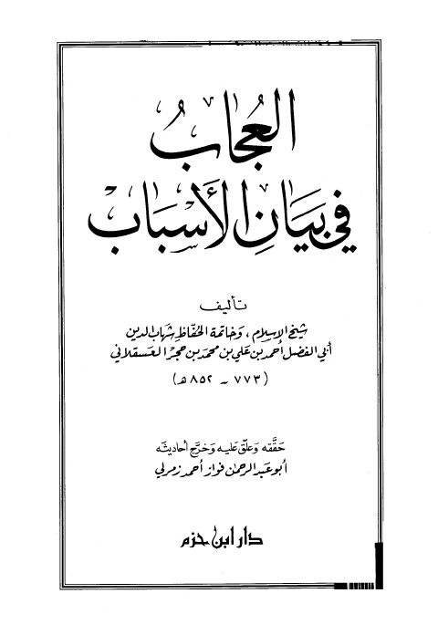

Downloads need an internet connection.
العجاب في بيان الأسباب
Authors: أحمد بن علي بن حجر العسقلاني
Editors: فواز أحمد زمرلي
Publishers: دار ابن حزم
**▫️ العنوان: العجاب في بيان الأسباب** ▪️ المؤلف: #أحمد_بن_علي_بن_حجر_العسقلاني ▫️ المحقق: #فواز_أحمد_زمرلي ▪️ الناشر: #دار_ابن_حزم ▫️ تاريخ النشر: 2002م 1422هـ ▪️ بلد النشر: بيروت، #لبنان ▫️ الطبعة: 1 ▪️ عدد الأجزاء: 1 ▫️ الصفحات: 533 ▪️ نوع الوعاء: #كتاب ▫️ التصنيف الرئيسي: #التفسير_وعلوم_القرآن ▪️ التصنيف الفرعي: #علوم_القرآن ۪